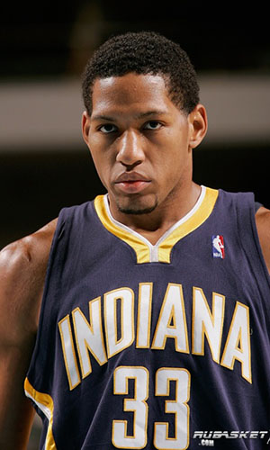

|  |
Матчи |
30 |
|
Передачи (всего/среднее) |
17 |
0.6 |
| В основе |
6 |
|
Подборы в защите (всего/среднее) |
60 |
2 |
| Время (всего/среднее) |
611:47 |
20:24 |
Подборы в атаке (всего/среднее) |
20 |
0.7 |
| Очки (всего/среднее) |
188 |
6.3 |
Подборы (всего/среднее) |
80 |
2.7 |
| 2-очковые броски (всего/среднее) |
35/78 |
1.2/2.6 |
Перехваты (всего/среднее) |
13 |
0.4 |
| 2-очковые броски (% реализации) |
44.9% |
|
Потери (всего/среднее) |
24 |
0.8 |
| 3-очковые броски (всего/среднее) |
30/84 |
1/2.8 |
Блокшоты (всего/среднее) |
6 |
0.2 |
| 3-очковые броски (% реализации) |
35.7% |
|
Блокшоты соперника (всего/среднее) |
9 |
0.3 |
| Штрафные броски (всего/среднее) |
28/37 |
0.9/1.2 |
Фолы (всего/среднее) |
67 |
2.2 |
| Дэнни Грейнджер |
Штрафные броски (% реализации) |
75.7% |
|
Коэффициент полезности (всего/среднее) |
98 |
3.3 |